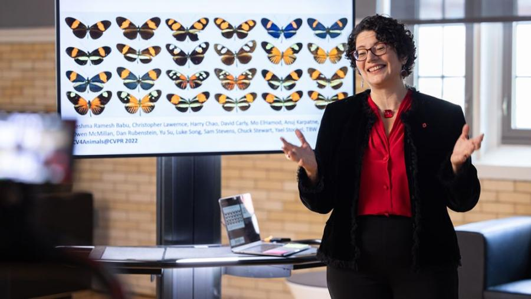

Tanya Berger-Wolf is weaving biology and machine learning into a new field of science for wildlife conservation.
By Ross Bishoff
Her life’s work had been leading to this moment, this decision. Still, it was a hard decision. The timing was rocky.
After years of leading wildlife conservation efforts and animal ecology research that combine machine learning with biology, Tanya Berger-Wolf was being asked by colleagues across the United States to lead a proposal to the National Science Foundation (NSF) to extract traits from images. It would eventually become a new field of science: imageomics.
It was November 2020, and Berger-Wolf was new to Ohio State. She was leading the university’s computer modeling and analytics response to COVID-19 while also learning the ropes for directing the Translational Data Analytics Institute.
“I had just said no to three other requests,” Berger-Wolf recalls. “But I had to say yes to this one. Imageomics is a culmination of many threads that I’ve been working on my entire career.”
As a computational ecologist, Berger-Wolf was a founding member of Wildbook, a project of the nonprofit Wild Me . Those efforts and the broader collaboration with ecologists laid the groundwork for the Imageomics Institute, which will use the vast supply of worldwide images and videos — from scientific projects, digitized biological collections of natural history museums, citizen science efforts, online repositories (including Wildbook), and even social media platforms — to train machine learning algorithms to provide insight into animal (and plant) traits and applications to biodiversity and conservation.
“It’s a wondrous and amazing thing, quite frankly, to have Tanya leading this,” says Paula Mabee, a member of Imageomics’ executive leadership team and chief scientist and observatory director for NSF’s National Ecological Observatory Network, operated by Battelle. “She has a deep appreciation for biology and understands the multiple scales of biological research that require new approaches to trait discovery data.”
Understanding animal traits — from stripes on zebras to the behaviors of butterflies — is central to imageomics’ mission because it provides a window into ecology and the evolution of a species, which can unlock critical information to improve conservation practices.
“Machine learning is the key for this,” says Mabee, a biologist. “Right now, what we know about traits is written in texts and locked in images. Her work will mobilize those images so we can actually use them.
“A lot of my work, and my team’s work, has basically led to this moment. We can’t move ahead without a visionary like Tanya, with her expertise and connections. The benefits are really wide-ranging from the standpoint of understanding and saving our planet.”
Can our phones help wildlife conservation efforts?
In the past, species conservation efforts used approaches such as human observations, tagging, radio collars and flyover surveys to understand wildlife traits, behaviors and population dynamics. However, these methods are often inefficient, expensive and dangerous to both animals and humans. Moreover, they do not scale large regions or populations.
Using images for machine learning, meanwhile, is a whole new ballgame. There are millions of images available, whether they come from museums and wildlife foundations, drones or trail cameras, research projects or your own camera.
Those images can train machine learning tools to discover previously unknown animal traits. Those traits can indicate evolutionary patterns or ecological changes and unlock information that improves conservation practices.
And it has a proven track record.
Wildbook’s work helped inform conservation and policy efforts for animals such as whale sharks, changing their IUCN Red List status from vulnerable to endangered and their population from stable to decreasing. Likewise, the same work altered how the Kenya Wildlife Service manages conservation for the endangered Grevy’s zebra. That’s because more information, more data, helps officials make better decisions and devote resources to the right areas. In fact, a lack of information is a major culprit in faulty conservation efforts.
The IUCN Red List monitors the planet’s biodiversity. Of the 150,000 species currently monitored, 20,469 have their conservation status as “data deficient” and more than 66,580 have a population trend that is unknown.
“How can we tell if our conservation practices are working if we don’t have enough data?” Berger-Wolf says. “If what we need is data, this is something we can do. And we can do it from this abundant data source: images.
View original article at Ohio State Impact.